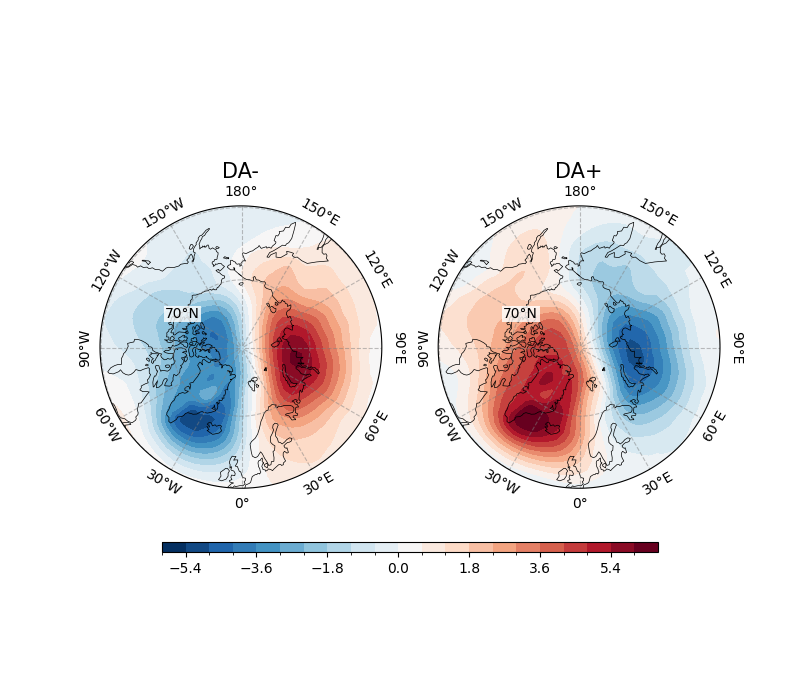
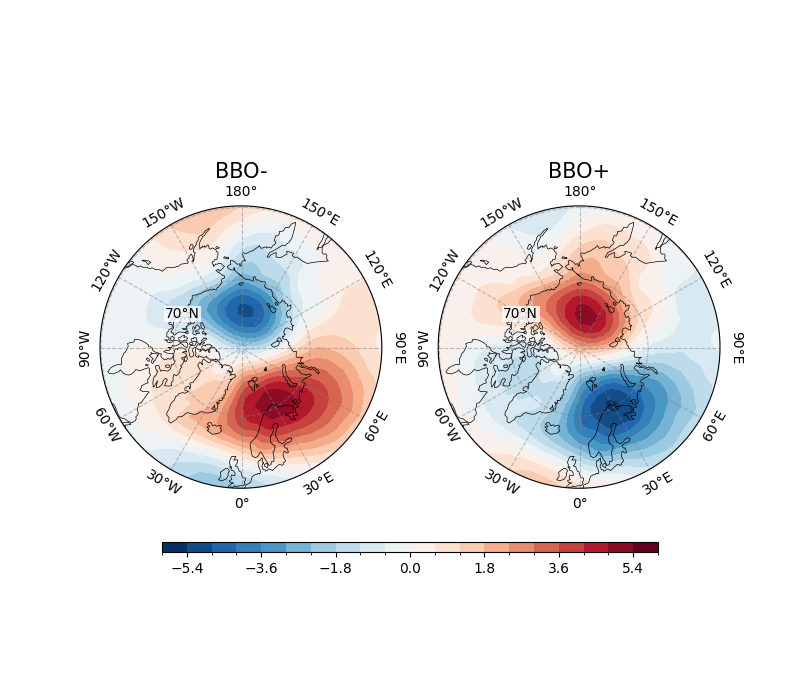

Note
Go to the end to download the full example code.
Arctic Dipole Anomaly (DA/AD) and Barents-Beaufort Oscillation (BBO)¶
Background¶
The Arctic Dipole Anomaly (DA), formally proposed by Wu, Wang, and Walsh in 2006, is defined as the second leading empirical orthogonal function (EOF) mode of monthly mean sea level pressure (SLP) north of 70°N, with the first mode corresponding to the Arctic Oscillation (AO). During the winter season (October through March), the DA accounts for approximately 13% of the total variance, while the AO accounts for 61%, as noted in various studies (e.g., Wu et al., 2006). The DA is characterized by a dipole structure with two poles of opposite sign: one center of high pressure over the Canadian Arctic Archipelago and northern Greenland, and another of low pressure over the Kara and Laptev Seas. This configuration creates a pressure gradient with a zero isopleth oriented from the Bering Strait across the Arctic to the Greenland and Barents Seas.
Anomalous winds associated with the DA are generally directed parallel to this zero isopleth, either toward the Greenland and Barents Seas during its positive phase or toward the Bering Strait during its negative phase. These wind patterns significantly influence sea ice motion and export from the Arctic Ocean, particularly through the Fram Strait. Research, such as Wang et al. (2009), suggests that the DA plays a crucial role in driving sea ice out of the Arctic, contributing to extreme sea ice minima, such as the record low observed in 2007. Additionally, Bi et al. (2021) highlight that the DA can enhance the inflow of relatively warm waters from the North Pacific through the Bering Strait, potentially reducing sea ice extent and age by altering thermodynamic conditions. The DA’s impact extends to seasonal changes, with studies like Bi et al. (2023) noting its distinct role in spring atmospheric circulation modes affecting summer sea ice decline.
The Barents-Beaufort Oscillation (BBO; Wu and Johnson, 2007), refers to a seesaw structure in SLP anomalies between the Beaufort Sea and the Barents Sea, particularly during the winter months (October–March). This oscillation is characterized by a mode of atmospheric intraseasonal variability where SLP anomalies over the Barents Sea are out of phase with those over the Beaufort Sea, exhibiting an equivalent barotropic structure, as noted in their 2007 paper (Wu & Johnson, 2007). The BBO accounts for approximately 9.1% of the variance in SLP anomalies, making it a less dominant but still significant pattern compared to the DA/AD.
The seesaw structure implies that when pressure is anomalously high in the Barents Sea, it is correspondingly low in the Beaufort Sea, and vice versa. This pattern influences sea ice dynamics, particularly the flux through the Fram Strait, with research suggesting it has a more substantial effect on sea ice export compared to the AO and DA in certain contexts (Wu & Johnson, 2007). The BBO’s impact is seen in modulating atmospheric circulation patterns that affect temperature anomalies and sea ice concentration, contributing to regional climate variability in the Arctic. While less studied than the DA/AD, its role in sea ice movement and potential links to broader climate systems are noted in the literature, though detailed mechanisms remain an area of ongoing research.
See also
Wu, B., Wang, J., & Walsh, J. E. (2006). Dipole Anomaly in the Winter Arctic Atmosphere and Its Association with Sea Ice Motion. Journal of Climate, 19(2), 210-225. https://doi.org/10.1175/JCLI3619.1
Wu, B., and M. A. Johnson (2007), A seesaw structure in SLP anomalies between the Beaufort Sea and the Barents Sea, Geophys. Res. Lett., 34, L05811, doi: https://doi.org/10.1029/2006GL028333.
Wang, J., J. Zhang, E. Watanabe, M. Ikeda, K. Mizobata, J. E. Walsh, X. Bai, and B. Wu (2009), Is the Dipole Anomaly a major driver to record lows in Arctic summer sea ice extent? Geophys. Res. Lett., 36, L05706, doi: https://doi.org/10.1029/2008GL036706.
Zhang, R. Zhang, Mechanisms for low-frequency variability of summer Arctic sea ice extent, Proc. Natl. Acad. Sci. U.S.A. 112 (15) 4570-4575, https://doi.org/10.1073/pnas.1422296112 (2015).
Kapsch, ML., Skific, N., Graversen, R.G. et al. Summers with low Arctic sea ice linked to persistence of spring atmospheric circulation patterns. Clim Dyn 52, 2497–2512 (2019). https://doi.org/10.1007/s00382-018-4279-z
Bi, H., Wang, Y., Liang, Y., Sun, W., Liang, X., Yu, Q., Zhang, Z., & Xu, X. (2021). Influences of Summertime Arctic Dipole Atmospheric Circulation on Sea Ice Concentration Variations in the Pacific Sector of the Arctic during Different Pacific Decadal Oscillation Phases. Journal of Climate, 34(8), 3003-3019. https://doi.org/10.1175/JCLI-D-19-0843.1
Bi, H., Liang, Y., & Chen, X. (2023). Distinct role of a spring atmospheric circulation mode in the Arctic sea ice decline in summer. Journal of Geophysical Research: Atmospheres, 128, e2022JD037477. https://doi.org/10.1029/2022JD037477
Wu, B., and M. A. Johnson (2007), A seesaw structure in SLP anomalies between the Beaufort Sea and the Barents Sea, Geophys. Res. Lett., 34, L05811, doi: https://doi.org/10.1029/2006GL028333.
Bi, K. Sun, X. Zhou, H. Huang and X. Xu, “Arctic Sea Ice Area Export Through the Fram Strait Estimated From Satellite-Based Data:1988–2012,” in IEEE Journal of Selected Topics in Applied Earth Observations and Remote Sensing, vol. 9, no. 7, pp. 3144-3157, July 2016, doi: https://doi.org/10.1109/JSTARS.2016.2584539.
Bi, H., Liang, Y., & Chen, X. (2023). Distinct role of a spring atmospheric circulation mode in the Arctic sea ice decline in summer. Journal of Geophysical Research: Atmospheres, 128, e2022JD037477. https://doi.org/10.1029/2022JD037477
Methodology¶
Before proceeding with all the steps, first import some necessary libraries and packages
import easyclimate as ecl
import xarray as xr
import numpy as np
import matplotlib.pyplot as plt
import cartopy.crs as ccrs
We loads the monthly mean sea level pressure (SLP) dataset for the Northern Hemisphere from the file ‘slp_monmean_NH.nc’. The dataset, accessed via the ‘slp’ variable, contains SLP values across a spatial grid and time dimension, serving as the foundation for subsequent analyses of the Arctic Dipole Anomaly (DA/AD) and Barents-Beaufort Oscillation (BBO).
slp_data = ecl.open_tutorial_dataset("slp_monmean_NH").slp
slp_data
And then, we computes SLP anomalies by removing the seasonal cycle from the monthly mean SLP data
using the easyclimate.remove_seasonal_cycle_mean function.
The resulting dataset, slp_data_anomaly, represents deviations from the climatological mean,
isolating interannual and intraseasonal variability critical for identifying teleconnection patterns like the DA/AD and BBO.
Here, we calculates the standardized indices for the Arctic Dipole Anomaly (DA/AD) and Barents-Beaufort Oscillation (BBO) using empirical orthogonal function (EOF) analysis as defined by Wu et al. (2006) and Wu & Johnson (2007).
The easyclimate.field.teleconnection.calc_index_DA_EOF2_Wu_2006 function extracts the second EOF mode for DA/AD,
while easyclimate.field.teleconnection.calc_index_BBO_EOF3_Wu_2007 extracts the third EOF mode for BBO.
Both indices are multiplied by \(-1\) to align with conventional phase definitions,
representing the temporal evolution of these atmospheric teleconnection patterns.
/opt/hostedtoolcache/Python/3.11.15/x64/lib/python3.11/site-packages/xeofs/preprocessing/multi_index_converter.py:49: FutureWarning: Deleting a single level of a MultiIndex is deprecated. Previously, this deleted all levels of a MultiIndex. Please also drop the following variables: {'dim1', 'dim2'} to avoid an error in the future.
X_transformed = X_transformed.drop_vars(dim)
/opt/hostedtoolcache/Python/3.11.15/x64/lib/python3.11/site-packages/xeofs/preprocessing/multi_index_converter.py:49: FutureWarning: Deleting a single level of a MultiIndex is deprecated. Previously, this deleted all levels of a MultiIndex. Please also drop the following variables: {'dim1', 'dim2'} to avoid an error in the future.
X_transformed = X_transformed.drop_vars(dim)
After that, we identifies time periods corresponding to the extreme positive and negative phases
of the DA/AD and BBO indices. Using the easyclimate.get_time_exceed_index_lower_bound
and easyclimate.get_time_exceed_index_upper_bound, time steps are selected where the indices
exceed one standard deviation (positive or negative) from the mean.
These periods are used to composite SLP anomalies for the positive (DA+, BBO+) and negative (DA-, BBO-) phases,
enabling analysis of their spatial patterns.
ad_lower_time = ecl.get_time_exceed_index_lower_bound(index_da, -index_da.std())
ad_upper_time = ecl.get_time_exceed_index_upper_bound(index_da, index_da.std())
bbo_lower_time = ecl.get_time_exceed_index_lower_bound(index_bbo, -index_bbo.std())
bbo_upper_time = ecl.get_time_exceed_index_upper_bound(index_bbo, index_bbo.std())
And we composite SLP anomaly fields for the positive and negative phases of the DA/AD and BBO by averaging the SLP anomaly data over the time periods identified in the previous step.
The resulting datasets (da_minus, da_plus, bbo_minus, bbo_plus)
represent the mean spatial patterns of SLP anomalies during extreme phases,
highlighting the dipole structures characteristic of these oscillations.
da_minus = slp_data_anormaly.sel(time = ad_lower_time).mean(dim = "time")
da_plus = slp_data_anormaly.sel(time = ad_upper_time).mean(dim = "time")
bbo_minus = slp_data_anormaly.sel(time = bbo_lower_time).mean(dim = "time")
bbo_plus = slp_data_anormaly.sel(time = bbo_upper_time).mean(dim = "time")
This block applies the easyclimate.plot.add_lon_cyclic function to the composite
SLP anomaly fields (da_minus, da_plus, bbo_minus, bbo_plus) to
address discontinuities at the 0°/360° longitude boundary.
A cyclic point is added at a 2.5° longitude interval, ensuring smooth visualization of the polar maps in subsequent plotting steps, particularly for the North Polar Stereographic projection.
ad_minus = ecl.plot.add_lon_cyclic(da_minus, 2.5)
ad_plus = ecl.plot.add_lon_cyclic(da_plus, 2.5)
bbo_minus = ecl.plot.add_lon_cyclic(bbo_minus, 2.5)
bbo_plus = ecl.plot.add_lon_cyclic(bbo_plus, 2.5)
At last, we generates a two-panel polar stereographic map visualizing the composite SLP anomaly fields for the negative (DA-) and positive (DA+) phases of the Arctic Dipole Anomaly.
The maps are plotted with a North Polar Stereographic projection centered at 0° longitude. The contour map displays SLP anomalies with a diverging color scheme (‘RdBu_r’), with levels ranging from -6 to 6 hPa. Coastlines and gridlines are added for geographic context, and a shared horizontal colorbar is included to represent SLP anomaly magnitudes. The titles ‘DA-’ and ‘DA+’ distinguish the two phases.
fig, ax = plt.subplots(
1, 2,
figsize = (8, 7),
subplot_kw={"projection": ccrs.NorthPolarStereo(central_longitude=0)}
)
for axi in ax.flat:
axi.coastlines(edgecolor="black", linewidths=0.5)
gl, meta = ecl.plot.draw_polar_basemap(
ax = axi,
lon_step=30,
lat_step=20,
lat_range=[50, 90],
draw_labels=True,
gridlines_kwargs={"color": "grey", "alpha": 0.5, "linestyle": "--"},
lat_label_lon=-120
)
axi = ax[0]
fg1 = ad_minus.plot.contourf(
ax = axi,
cmap="RdBu_r",
levels=np.linspace(-6, 6, 21),
transform=ccrs.PlateCarree(),
add_colorbar = False,
)
axi.set_title("")
ecl.plot.set_polar_title("DA-", meta, ax = axi, size = 15)
axi = ax[1]
ad_plus.plot.contourf(
ax = axi,
cmap="RdBu_r",
levels=np.linspace(-6, 6, 21),
transform=ccrs.PlateCarree(),
add_colorbar = False,
)
axi.set_title("")
ecl.plot.set_polar_title("DA+", meta, ax = axi, size = 15)
fig.colorbar(
fg1, ax = ax.flatten(),
orientation = 'horizontal',
pad = 0.1, aspect = 50, shrink = 0.8,
extendrect = True
)

<matplotlib.colorbar.Colorbar object at 0x7f95312fc110>
Also, we creates a two-panel polar stereographic map to visualize the composite SLP anomaly fields for the negative (BBO-) and positive (BBO+) phases of the Barents-Beaufort Oscillation.
Similar to the DA visualization, the maps use a North Polar Stereographic projection with a diverging color scheme (‘RdBu_r’) and SLP anomaly levels from -6 to 6 hPa. Coastlines and gridlines provide geographic context, and a shared horizontal colorbar indicates anomaly magnitudes. The titles ‘BBO-’ and ‘BBO+’ distinguish the two phases, highlighting the seesaw structure between the Beaufort and Barents Seas.
fig, ax = plt.subplots(
1, 2,
figsize = (8, 7),
subplot_kw={"projection": ccrs.NorthPolarStereo(central_longitude=0)}
)
for axi in ax.flat:
axi.coastlines(edgecolor="black", linewidths=0.5)
gl, meta = ecl.plot.draw_polar_basemap(
ax = axi,
lon_step=30,
lat_step=20,
lat_range=[50, 90],
draw_labels=True,
gridlines_kwargs={"color": "grey", "alpha": 0.5, "linestyle": "--"},
lat_label_lon=-120
)
axi = ax[0]
fg1 = bbo_minus.plot.contourf(
ax = axi,
cmap="RdBu_r",
levels=np.linspace(-6, 6, 21),
transform=ccrs.PlateCarree(),
add_colorbar = False,
)
axi.set_title("")
ecl.plot.set_polar_title("BBO-", meta, ax = axi, size = 15)
axi = ax[1]
bbo_plus.plot.contourf(
ax = axi,
cmap="RdBu_r",
levels=np.linspace(-6, 6, 21),
transform=ccrs.PlateCarree(),
add_colorbar = False,
)
axi.set_title("")
ecl.plot.set_polar_title("BBO+", meta, ax = axi, size = 15)
fig.colorbar(
fg1, ax = ax.flatten(),
orientation = 'horizontal',
pad = 0.1, aspect = 50, shrink = 0.8,
extendrect = True
)

<matplotlib.colorbar.Colorbar object at 0x7f95312ff850>
Summary¶
Both the Arctic Dipole Anomaly and the Barents-Beaufort Oscillation are pivotal in Arctic climate research, providing insights into the mechanisms driving variability in sea ice extent and concentration. The DA/AD, with its significant influence on sea ice export and potential for enhancing warm water inflow, has been linked to extreme sea ice minima, such as the 2007 record low, as discussed in Wang et al. (2009). This is crucial for predicting future Arctic environmental conditions, especially in the context of rapid ice loss observed in recent decades. The BBO, while accounting for a smaller variance, plays a critical role in modulating sea ice flux through the Fram Strait, as noted by Wu and Johnson (2007), and contributes to understanding regional climate dynamics.
These oscillations highlight the interconnectedness of atmospheric circulation, sea ice movement, and ocean currents in the Arctic. For instance, Kapsch et al. (2019) link spring atmospheric circulation patterns, potentially influenced by the DA/AD, to summer sea ice persistence, emphasizing their role in seasonal climate variability. Their study of these patterns aids in developing integrated climate models, essential for forecasting Arctic amplification of global warming and its downstream effects on mid-latitude weather systems. The potential for these patterns to influence global climate, as seen in their impact on sea ice export and ocean heat transport, underscores their importance for broader climate science and policy-making.
However, the exact interactions between DA/AD and BBO, and their combined effects on Arctic climate, remain complex and debated. Research, such as Bi et al. (2023), suggests distinct roles for spring circulation modes, but the full scope of their interplay with other climate indices, like the AO, requires further investigation. This complexity is evident in the varying contributions to variance and the need for long-term data, as seen in studies spanning decades (e.g., Wu et al., 2006; Bi et al., 2021). Understanding these phenomena is vital for addressing Arctic environmental changes, informing conservation strategies, and mitigating global climate impacts.
Total running time of the script: (0 minutes 3.289 seconds)